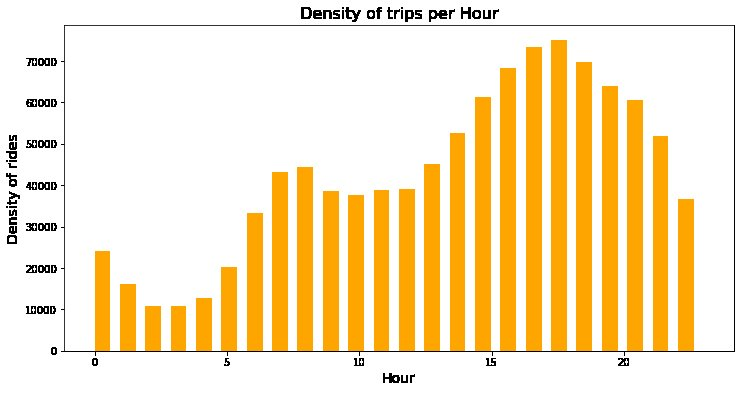
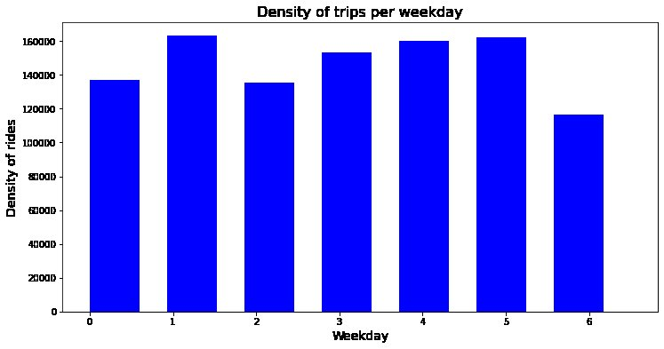
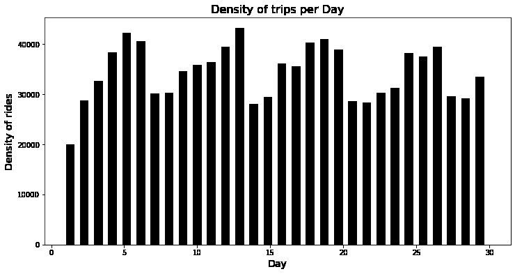

Uber pickups in New York City, September 2014
The question
When do Uber pickups happen, by day of the month, weekday, and hour?
- 1,028,136 pickups
- Parse timestamps
- Day, hour, and weekday columns
- Histograms and location plot
What I did
- Loaded the September 2014 pickup data: 1,028,136 rows with the date and time, latitude, longitude, and dispatch base of each pickup.
- Converted the timestamp from text to a datetime and created day, hour, and weekday columns from it.
- Plotted the number of pickups by day of the month, by weekday, and by hour of the day.
- Mapped the pickup locations as a scatter plot of longitude against latitude.
Results
- Hour of day: pickups are lowest around 2 to 3 a.m. (about 11,000), climb through the morning, and peak in the late afternoon and early evening, around 5 p.m. (about 75,000).
- Weekday: Tuesday was the busiest day (about 163,000 pickups) and Sunday the quietest (about 116,000).



Tools
- Python
- pandas
- Matplotlib
Skills shown
- Datetime feature engineering
- Exploratory data analysis
- Working with a million-row dataset
- Data visualization
Code preview
Creating time features and plotting pickups by hour
uber['Date/Time'] = pd.to_datetime(uber['Date/Time'])
uber["Day"] = uber["Date/Time"].apply(lambda x: x.day)
uber["Hour"] = uber["Date/Time"].apply(lambda x: x.hour)
uber["Weekday"] = uber["Date/Time"].apply(lambda x: x.weekday())
fig, ax = plt.subplots(figsize=(12, 6))
plt.hist(uber.Hour, width=0.6, bins=24, color="orange")
plt.title("Density of trips per Hour", fontsize=16)Excerpts from the original file, reformatted for readability. View the full notebook on GitHub.